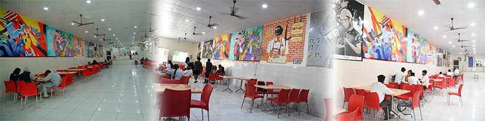
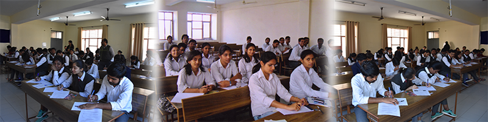
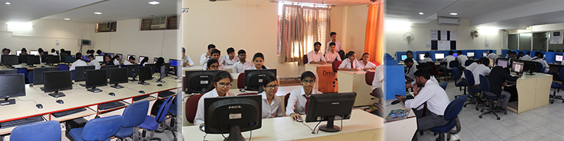
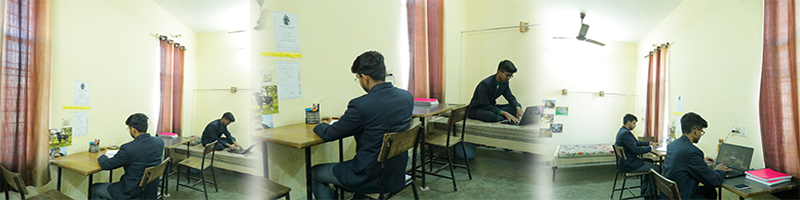
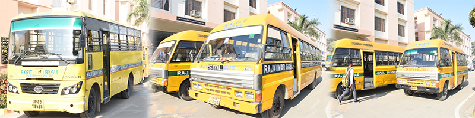

ATM
RKGIT ATM

ATM machine is provided at the college gate of the college for all the students and faculty members of the college.
Machine is available for all from 8am to 8pm.
Services are regularly maintained so that the users may not face any dificulties.
All types of cash notes are available with the AC facilties.
Auditorium Conference Hall
Auditorium Conference Hall

The Auditorium serves as a space for encouraging creativity and fostering communication. Talks by guest speakers, inter-college competitions, and important functions including the annual College Fest, Independence Day and Teachers Day etc are held here . The auditorium can seat about 250 people and has a very advanced light and sound system. It is equipped with a large stage, LCD Screens, Projector Screen, comfortable seating, carpeting, wall paneling for acoustic effects, air-conditioners, wash-rooms, locker and podium. The sound system includes a mixer and a studio master. Conference hall Serves the purpose of regular meetings of department heads, board of governance, higer authorities
Canteen
Canteen
The Canteen facility is available in the campus with wide range of services. Canteen provides all normal daily requirements of the students on payment basis. It remains open 24 hrs on working as well as nonworking days. Nescafe, Burger, Momos, other food & bakery items are served in the canteen alongwith other items. Beside the episodic events, Cafeteria is the place where students get a lot of relaxation and enjoy their free time.
Classroom
Canteen
Spacious classrooms for all batches Wooden furniture with great comfort helps students sit for longer period of time. Class rooms are furnished with curtains for maintaining better atmosphere during summers. Classes also have world class lighting and conditioning system with projector 4speaker facility.
Computer Lab
Computer Labs in RKGIT
The college has high-tech computer graphics studios with more than 360 advanced computers with LAN and internet services through wireless connectivity, and LCD projection systems, hardware and software, digital cameras, printers, scanners, plotters, photocopying machine and video cameras etc. all are the back bone of our infrastructure. The college has high-tech computer graphics studios with more than 360 advanced computers with LAN and internet services through wireless connectivity, and LCD projection systems, hardware and software, digital cameras, printers, scanners, plotters, photocopying machine and video cameras etc. all are the back bone of our infrastructure.
Hostels
Hostals in RKGIT

The RKGIT has 08 hostels 02 for girls and 06 for boys, equipped with all facilities.
There are single seater rooms, double seater rooms as well as triple seater rooms available for students. The College has also has a AC hostel for boys (2nd year onward).
24 hours generator facility to meet power requirement.
Hot and cold water supply is available according to seasonal needs.
An Indoor stadium has been developed recently with latest facilities.
Well-equipped Mess to provide nourishing and quality food to the resident boys and girls separately (Only Vegetarian food is served in hostel mess).
The hostel rooms are fully furnished with bed, study table, mattresses, almirah, curtains, bedsheet, pillow, chairs and fans etc.
The entire campus is quite safe and secure. Entry to the campus is controlled and regulated by security staff round the clock.
Ambulance with driver and first aid facilities are available in the hostels round the clock.
The college has tie up with best hospitals at Ghaziabad.
All students living in hostels are covered with Group Medical Insurance upto Rs. 1,00,000/-
Library
Library in RKGIT
LIBRARY
About Us
RKGIT has a well-stocked modern centrally air-conditioned library. The library is kept open for 12 hours on working days to inculcate. The habit of reading and acquiring knowledge. On Sundays & holidays, it is open during the daytime for 8 hours.
RKGIT is the proud owner of a modern centrally air-conditioned Computer Centre and a campus-wide Internet facility with a wide band dedicated link. The entire campus is connected with the Local Area Network. RKGIT provides free Internet facilities to all class students in hostels.
Library at a Glance
| Library Space | Seating Capacity | Library Timings | Library Usage | Library Automation | ||||||||||||||||||||||||||||||||||||||||||||||||||||||||||||
|---|---|---|---|---|---|---|---|---|---|---|---|---|---|---|---|---|---|---|---|---|---|---|---|---|---|---|---|---|---|---|---|---|---|---|---|---|---|---|---|---|---|---|---|---|---|---|---|---|---|---|---|---|---|---|---|---|---|---|---|---|---|---|---|---|
| Total Area 958.74 m2 |
Reading Section : 158 Multimedia Library : 16 Staff Seating : 07 |
Weekdays on : 8.30 am to 09.00 pm During Examination : 8.30 am to 11.00 pm Holidays (During Examination) : 9.00 am to 05.00 pm |
No. of Books per day (Check in, Check out) : 150 users (Avg) No. of Student Visiting Every Day : 80 users (Avg) No. of Faculty/Staff Visiting Every Day : 20 (Avg) |
Library Automation : Yes OPAC : Yes Internet Connectivity : Yes Automation Software : ACTiF/KOHA-(Parallel) |
| Department | Number of Titles | Number of Volumes | No. of National Journals (hard Copy) |
|---|---|---|---|
| CSE | 1073 | 14,340 | 12 |
| CSE(DS) | 11 | 362 | 12 |
| CSE(IOT) | 11 | 774 | 12 |
| CSE(AI&ML) | 12 | 411 | 12 |
| IT | 759 | 7,624 | 06 |
| EN | 776 | 10,034 | 07 |
| EC | 1179 | 17,651 | 12 |
| ME | 941 | 15,127 | 07 |
| Civil | 106 | 4,077 | 06 |
| AS&H | 1074 | 19,590 | 10 |
| Miscellaneous | 432 | 916 | 0 |
| Total (B.Tech) | 6374 | 90,906 | 96 |
| MBA | 2399 | 16,284 | 39 |
| G.Total | 8,773 | 1,07,190 | 135 |
Library Organisation
The Central Library is organized into the following six functional units:Acquisition and Processing
The key function of the Acquisition and Technical Section is to procure all types of documents (excluding CDs databases and journals) and their classification and cataloguing. The process of book acquisition is fully computerized using the ACTiF software package. The Section is also responsible for tooling of books, which involves bar-code stickers etc. The Section brings out a monthly list of books added to the book collection in the Library.
Computer Application
The computer Applications section coordinates with all sections of the Library for library computerization. The Section is responsible for offering computer–based library services. It has a Server Room, Staff Room and Computer Laboratory that houses 15 computers exclusively for the library users. The section also houses content development team for the Library Web Page.
Acquisition and Processing
The Reader Services is concerned with issue, return and renewal of documents to the members of the Library. Besides faculty, students, research scholars and supporting staff of Institute. It provides assistance to the readers in locating library material. The section is also responsible for providing orientation to new entrants (UG, PG & Research scholars), casual and special visitors. It attends to inter- library loan requests and help students to visit other libraries. Readers may approach the Reference and membership Counter for Information or any assistance in the use of the library collection and services.
Journals Section
The Journals Section deals with all activities related to subscription to print and election journals.
Text Book and semester Books Section
The Library maintains a separate collection of textbooks that are recommended by concerned faculty members for different courses offered at RKGIT Ghaziabad. The Book Bank is also housed in the Text Book Section of the Library. The Book Bank holds multiple copies of selected textbooks for making them available to the students for the entire duration of a semester.
Bindery
The Bindery looks after the maintenance of library documents. Binding outfits are contracted to perform most of the binding jobs for the Library, however, binding of journals, by the vendor.
Library Rules
General Rules
All library users must sign in/out register available with the attendant at the gate. Users should maintain peace in the library and should not disturb other readers in the library. Smoking/eating/use of mobile phone/drinking/sleeping is strictly prohibited on the library premises.
While entering the library user should leave his/her personal belongings such as bags, personal books etc.at the counter reserved for this purpose. Loose papers and notebooks may however be taken into the library. Users leaving the library should permit the library staff to examine their personal belongings. If asked.
RKGIT library follows an open access system. Remember a book misplaced is a book lost, until tracked. The Librarian may suspend library service of a student member for one month. if he/she misbehaves with the library staff. The user of the library should not deface, mark, cut or damage the reading materials in any way. Persons doing so are liable to be fined heavily, apart from being asked to pay the cost of the damage. In case a person repeats the offences a second time his/her library card would be impounded and the membership terminated summarily.
If any student is found indulging in book hiding, stealing or mutilating, disciplinary action will be taken against him/her. The member would satisfy himself/herself before leaving the issue counter as to whether the book is in good condition or not otherwise, he/she may be held responsible.
Library remains open from 08:30 a.m. to 09:00 p.m.
The circulation counter shall remain closed from 1:40 p.m. to 2:30 p.m. for lunch break.
Circulation Rules
Borrowing facilities are given only to the member of the library. Books may be borrowed only against the library card issued to an individual. Borrowing will be done only through the counter. The library card is non-transferable.
Books are issued and returned from 09:00 a.m. to 5:00 p.m.
The Library member is responsible for any book issued against that library card, as per the library record.
Newspapers, periodicals & reference books will not be issued from the Library.
Book will not be renewed.
The user should check the books thoroughly for missing pages, chapters etc. While getting them issued. No complaint will be entertained later on.
No books in damaged condition will be accepted from the users on return. Damaged books will have to be replaced by the borrower.
In case of loss of books the borrower, the borrower is required either to replace the books with recent edition, if available or pay its cost.
Copyright of the CDs will be available for the Users in Multimedia Section.
If a book is not returned within the stipulated time. The member will be charged a penalty the Rs 5.00 for the textbook and book bank book and Rs. 50.00 for reference book per day per volume. The fine should be paid at the circulation counter.
If a member loses a book issued against his/her library card, the penalty will be as follows:
Current cost of the book.
If the relevant book is not easily available in the market, then the user would pay double the current cost of the book.
If a member loses his/her library card/ID card, and he/she makes a written report to the Director. Member will be responsible for misuse of lost card and a duplicate card will be issued at a cost of Rs.100.00.
If a borrower does not return the documents in spite of two successive reminders his/her membership is liable to be cancelled without further notice.
The Librarian can recall books and publications at any time if need arises.
Use of computers/Laptops
Computer in the library premises should be used for academic purposes only. Online chatting/dating, browsing of social networking sites and playing game on the computers are strictly prohibited. Strict disciplinary action will be taken against the defaulters.
Personal keyboards, mouse, etc are not allowed inside the library. Students must take care of their Pen drives, CD/DVD/ROMs, Mobiles and wallets etc.
Readers should not remove/ unplug computer cables/ connections network cables and other peripherals/ accessories in the library. Changing the setting and display the computer kept in the library is not permitted.
User Assistance
All members of the library team are available for any assistance one may need in using the library resources, facilities & services they are also welcome to offer suggestions for improving the library & its environment.
Electronic Resources
E- Journals Subscription-2022-23
AKTU E-Consortium(E-Journals-2622 & E-books - 33118)
NPTEL Video/Web Course (511 Title Video & 418 Title Web)
Membership of DELNET
Membership of National Digital Library.
DELNET Online Databases
The resources available under DELNET network are :
Union Catalogue of books records (3,54,15,310)
Union list of current periodicals records ( 1,04,569)
E-Books (1,613)
Union list of Journals(45,917)
Union catalogue of periodicals records ( 20,235)
Union list of sound recording records ( 1025)
Articles Database (11,24,250)
CD ROM database records (61,750)
Database of Theses and Dissertations records (1,30,753)
Union List of Video Recordings Records (6,000)
Multimedia Library
No. of PCs With Internet Connectivity : 16
Student Capacity : 16
Multimedia, Audio – Visual & Other Collections
LIBRARY AUTOMATION SOFTWARE : ACTiF/KOHA
Library Computer : 25
CD’S : 3626
Bound Volumes : 1243
Magazines : 35 (29 B-Tech+6 MBA)
News Papers : 19
Educational CD’s (IIT Delhi) : 423
Programme Outcomes(PO's)
The programme outcomes are broad statements that describe behavior and nature of work of students after graduation beyond the span of four years.
An ability to apply knowledge of mathematics, science, and mechanical engineering to handle practical situations.
An ability to design and conduct experiments of mechanical engineering, as well as to analyze and interpret results obtained through.
An ability to design a mechanical system, components or process to meet desired needs within realistic constraints such as economic, environmental, social, political, ethical, health and safety, manufacturing constraints and sustainability.
An ability to identify, formulates, and solves mechanical engineering problems with high degree of competence
An ability to use the techniques, skills and modern engineering tools necessary for solving mechanical engineering problems.
A clear understanding of professional, social and ethical responsibility. The broad education necessary to understand the impact of mechanical engineering solutions in a global, economic, environmental, and societal context.
A proper understanding for domestic and international issues.
An ability to be an effective team member of multidisciplinary teams & to apply knowledge of management.
An ability to communicate and demonstrate mechanical subject in relevant area.
Understanding and developing the competence for continuous learning in the area of design, Manufacturing and thermal.
An understanding of engineering and management principles and apply these to one’s own work, as a member and leader in a team, to manage projects.
Sports Activities
Sports in RKGIT

Indoor Sports: Indoor games / activities like Table Tennis, Chess, Carom, Gymnasium etc. are provided by the institute.
Outdoor Sports: RKGIT is having outdoor sports facilities for Cricket, Football, Basketball, Volleyball, Badminton etc. The spacious grounds of the College are maintained for this purpose.
Transport
Transport in RKGIT
The transport facility is provided by the institute to the student & staff . The college runs the buses throughout the Ghaziabad, Modinagar, Hapur, Noida, Seemapuri Border (Delhi) & also to the Delhi(Anand Vihar). For this facility the nominal charge is paid by the students.
Railway Concession : The college provide the facility to the student for the railway concession. This concession is provided only on the college holidays.
.accordion-flush class. This is the third item's accordion body. Nothing more exciting happening here in terms of content, but just filling up the space to make it look, at least at first glance, a bit more representative of how this would look in a real-world application.Others
Students Care
Discipline
75% attendence , submission of the assignments in time and participation in all activities by students is closely monitored . Students are liable to be dismissed or suspended if any of the terms of code of conduct is violated . Type of action will purely at the discretion of the management.
Committees
Any committee is made for some specific task. The member of that committee has some responsibility. Thus through this, students feel a sense of responsibility which help them in their future life too.CULTURAL COMMITTEE:- "The Cultural Committee", as it is popularly referred to as, is a student body which is responsible for all the cultural events in the Institute round the year. It comprises of seven sections which take care of the varied fields of cultural events.
DISCIPLINE COMMITTEE:- This committee maintain discipline in the institute.
ANTIRAGGING COMMITTEE:-This committee is formed in order to stop ragging of the new students.
Personality Development Programme(PDP)
Regular programmes are conducted to develop communication , interpersonal skills and ability to work in team in different environment . Numerous professional from the corporate world are invited regularly to share their experience and knowledge with the students to provide latest update, trends and practices.
Birthday Celebration
RKGIT Pariwar celebrates the birthday of every students . The Secretary of management committee, Director and one or two faculty members join the student(s) in the after noon to greet the student on his/her birthday. This all is done to generate a bond of trust and relationship between students and faculty & management and the feeling of being part of Pariwar -RKGIT Pariwar.